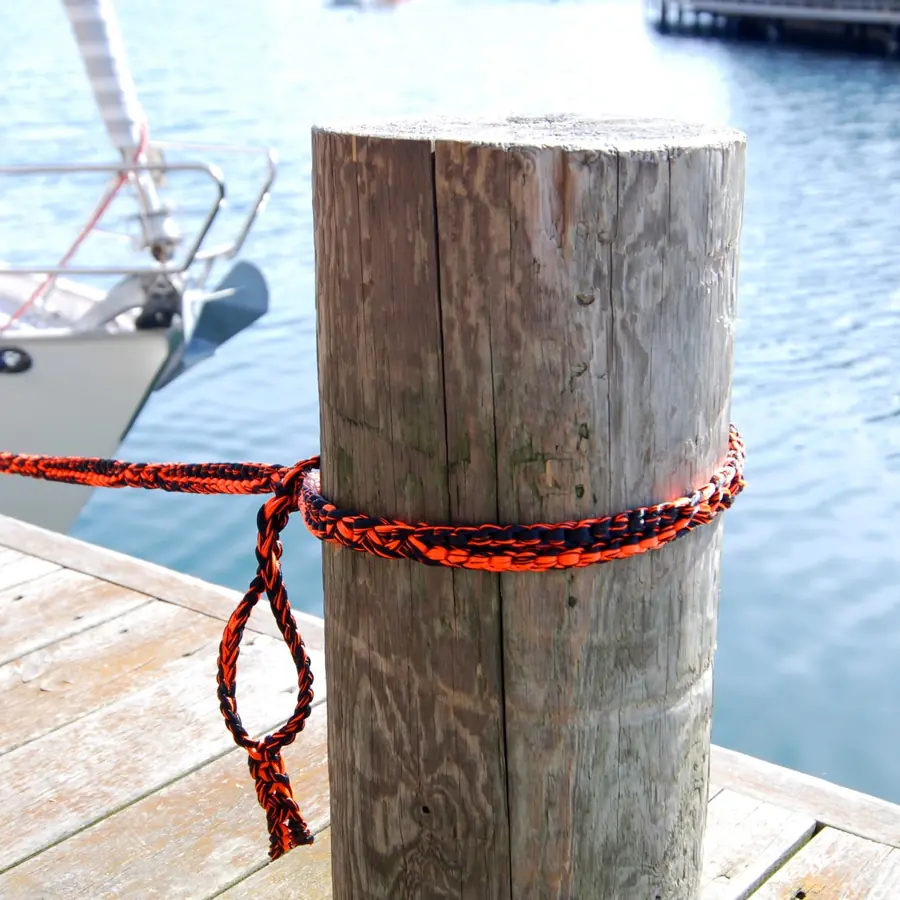
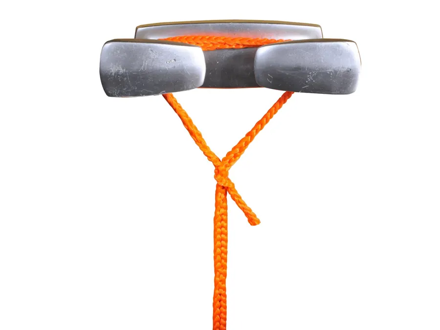

Uses
On the water.
A mooring line that adjusts one loop at a time, a fender line that moves in seconds, and a rope that does not swell, stiffen or rot in salt water. RunLock locks on a ring, a cleat or a post without a single knot.
A mooring line that adjusts one loop at a time, a fender line that moves in seconds, and a rope that does not swell, stiffen or rot in salt water. RunLock locks on a ring, a cleat or a post without a single knot.
Mooring is where knots are at their worst: tied wet, loaded all night, and stuck in the morning. A RunLock mooring line goes through the ring with a quick loop, around the post with a running loop, or onto the cleat with a fixed loop, and comes off with one pull. Move it one loop to take up the slack as the boat settles.
Polyester does not take up water, so the rope stays light and soft wet, keeps its strength, and shrugs off salt, sun and petrol. The stretch is kind to cleats and deck fittings in a swell. Fenders hang on a No 6 and move along the rail in seconds.
A No 4 line sets and lifts crayfish traps and nets without tangling, and a fixed loop at the end is a clean place for the float.


We would like to use Google Analytics to see which pages are read. No cookies are set unless you say yes. How we handle your data →
We would like to use Google Analytics to see which pages are read. No cookies are set unless you say yes. How we handle your data →
We would like to use Google Analytics to see which pages are read. No cookies are set unless you say yes. How we handle your data →
We would like to use Google Analytics to see which pages are read. No cookies are set unless you say yes. How we handle your data →
We would like to use Google Analytics to see which pages are read. No cookies are set unless you say yes. How we handle your data →
 Quick loop, fixed release
Quick loop, fixed release Fixed loop
Fixed loop